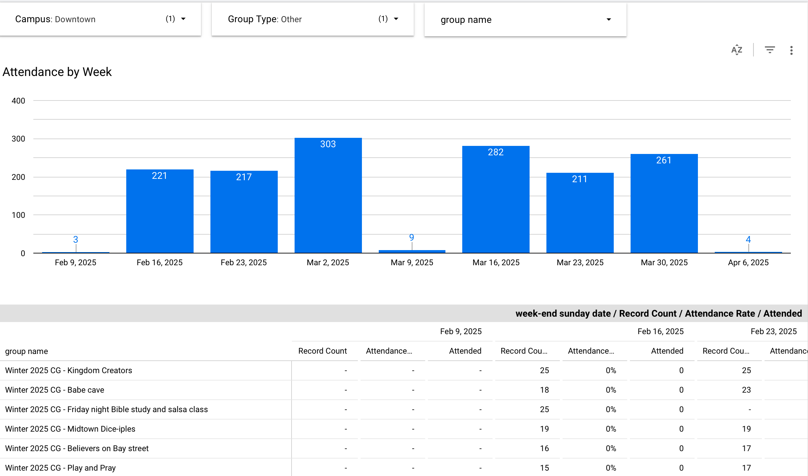
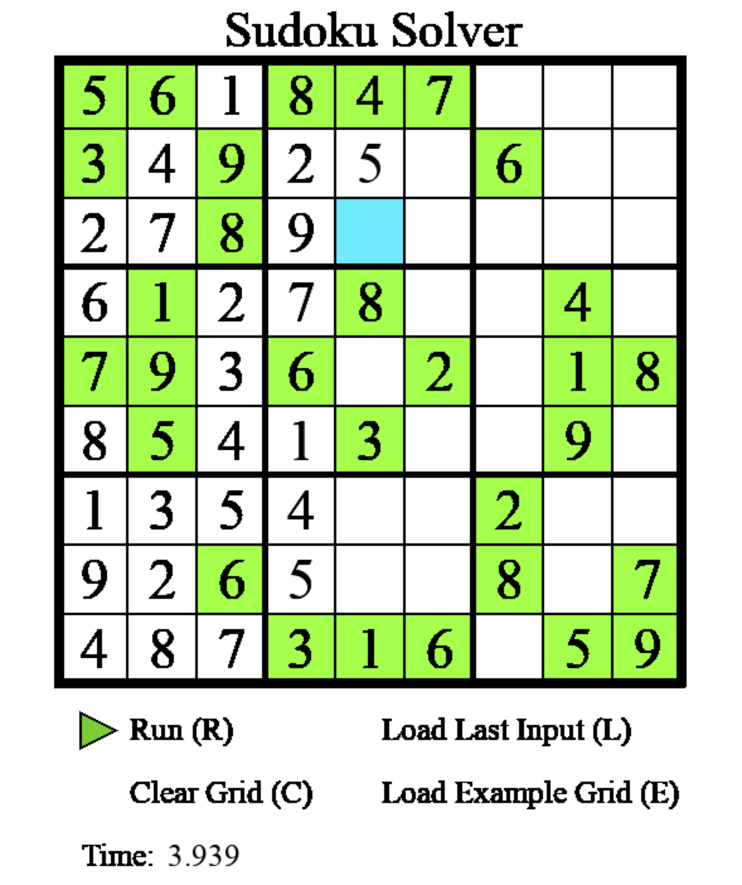
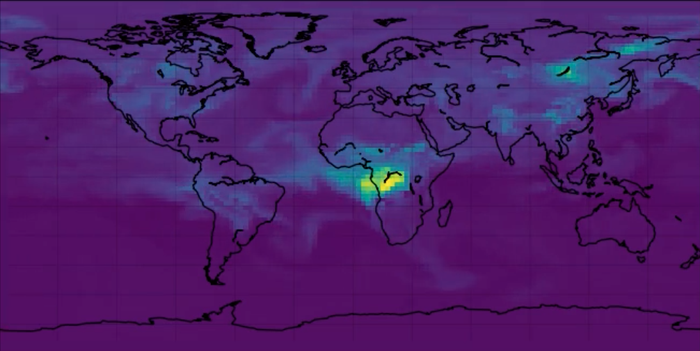
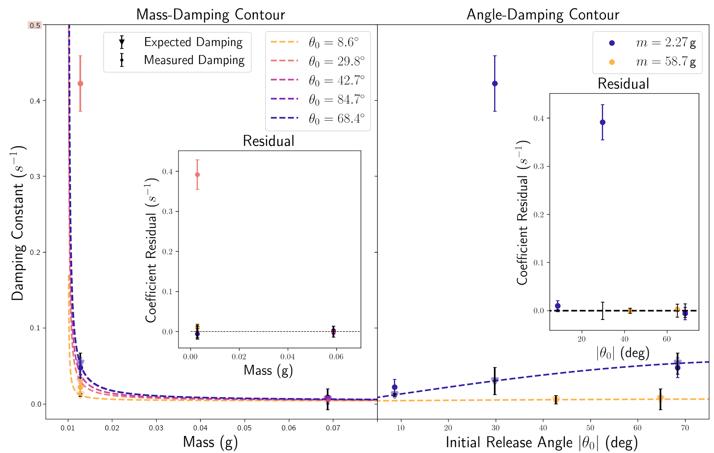
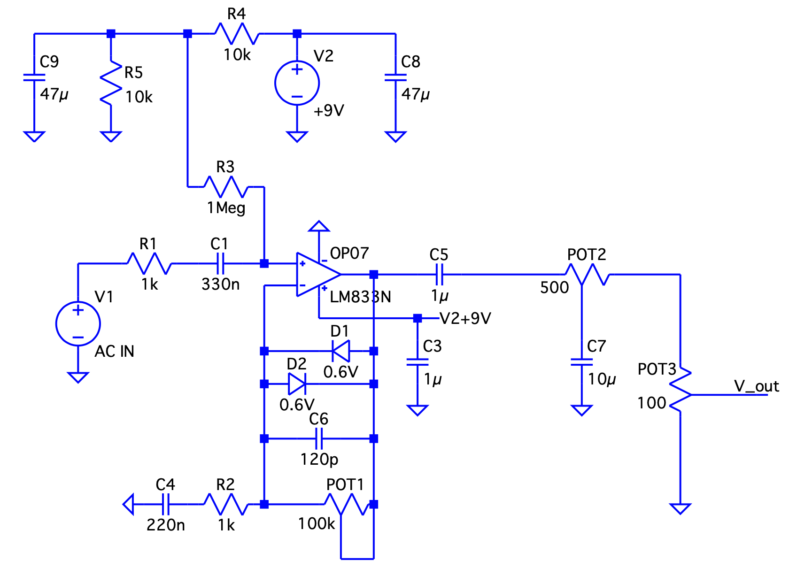

Workflows Code 1 (Fetch)
Workflows Code 2 (Compile)
Teams Code
Groups Code
Google API Access Code
Cronjob Script
Software programmed in Python using 'requests' to fetch JSON data from the Planning Centre website using an API key.
Data is processed into .csv files and temporarily saved. New fetches overwrite old data since nested dictionaries changes.
The .csv files are pushed through the Google client using the Google-Python API and a Google services account.
The files are read into a Google Sheets file with the .csv headers.
Google Lookerstudio imports the data automatically and displays it according to the front end filters.

Backtracking algorithm implemented in Python. An input 9x9 grid is given from which the code auto-fills a solution.
This is taken out using a validator for each empty grid cell. If a cell value returns invalid, it is wiped and the previous cell is re-examined. The code continues until each cell returns valid. History arrays are stored for each cell to track inputs.
Front end interface was created in Pygame.

A paper written in LaTeX for the purpose of a math textbook author job application. The paper contains internal references/links, font changes and decoration, headers/footers, and image wrapping. All figures, plots, and images were created using the PGF-TikZ package.
Paper
Regrid Testing Code 1
Regrid Testing Code 2
Animation Testing Code
Demo (next push)
GEOS-Chem Repo
Analysis of the GEOS-Chem climate model developed by Harvard software engineers.
Purpose of this research was to investigate the re-gridding process of the model, since vertical transport information of various chemical tracers is lost in the Euclidean computations.
That is, there is less upward/downward vertical motions (e.g. convections) in the model than expected. A CO tracer was use for test purposes.
The initial regridding process was to average out values over cells. Instead, our approach was to implement an algorithm to regrid based on the potential function.
This was done using Climate Data Operators (CDOs) in Perl, then re-exported into a new set of NetCDF data to be read into file by the model.

General relativity tensor computations can make you hate your life. Unless you enjoy hand-calculating 256 entries for the Riemann tensor (*ahem* masochist), I invite you to ignore this. Why not just get some code to do it for us??!

Rigorous analysis of a home-made marble pendulum. Nonlinear computational analysis with the addition of wind-drag and ODE nonlinearity (in the EOM).
Goal was to compute the drag coefficient on the marble(s). Comparison with expected results (e.g. period).

Any massive object in the universe exerts perturbations in spacetime. This is more noticable with the larger the mass.
Black holes may orbit and establish "ripples" in spacetime until they merge. These waves may be measured (LIGO) and converted to a frequency spectrum.
This project aims to determine the rate of frequency change (chirp rate) using a linear chirp transformation on the time series in the form of a FFT algorithm.

Musicians use distortion to cut through a mix. Though this may be taken out digitally (e.g. a DAW), there is often associated latency or software bugs, not making for a good live tool.
This project aimed to construct my own analog distortion circuit using a non-inverting operational amplifier and some diodes. A tone and volume knob were also added using potentiometers.
